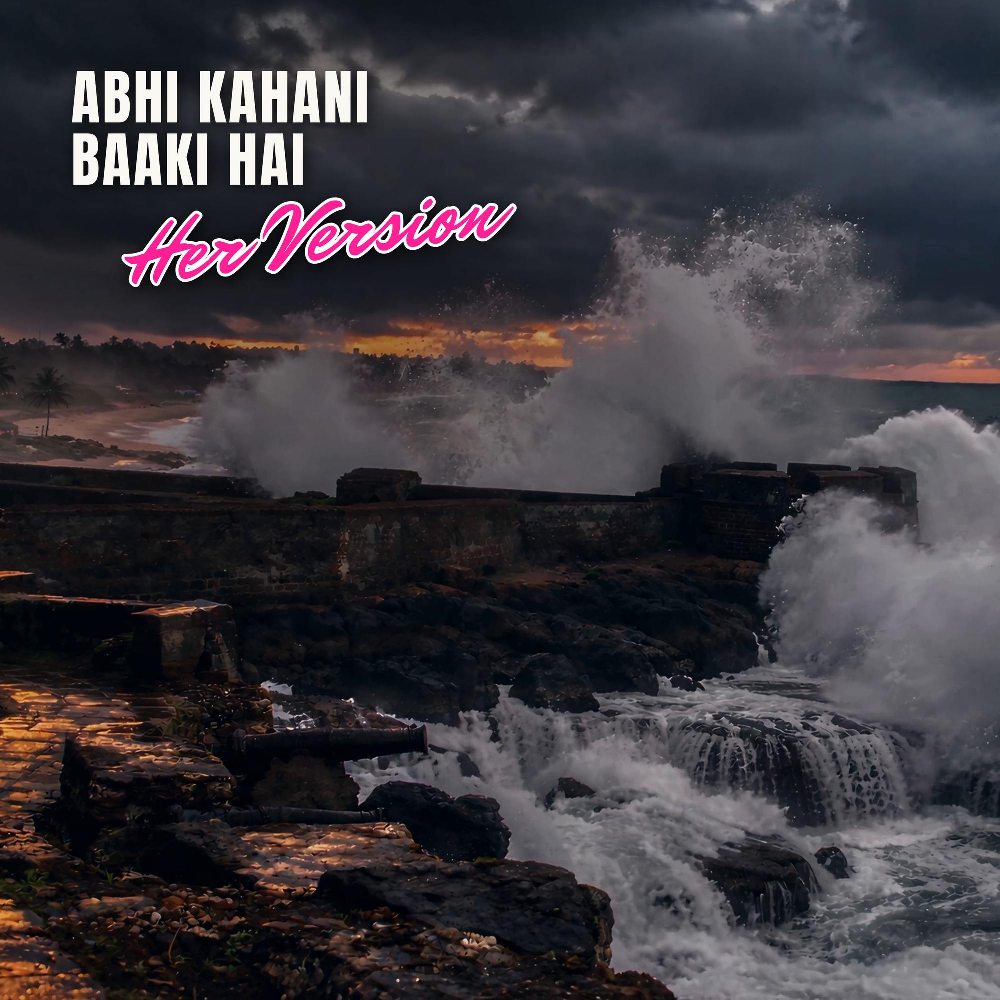

- Album
- 02
- Language
- Hindi
- Songs
- 8
- Release
- Fri Dec 18, 2026
- Status
- Out Dec 18
- Listen
- Spotify · Apple Music · YouTube Music · JioSaavn · Amazon Music
- Pre-save
- [Pre-save link]
Abhi Kahani Baaki Hai
“The story still remains.”
The story continues, in Hindi, with her side finally heard.
Tracklist08 songs
-
01
 Abhi Kahani Baaki Hai
Abhi Kahani Baaki Hai
-
02
 Sach Saamne Aa Jaayega
Sach Saamne Aa Jaayega
-
03
 Bhool Nahi Paaya
Bhool Nahi Paaya
-
04
 Teri Baatein
Lyrics: Nikhil Yadav
Teri Baatein
Lyrics: Nikhil Yadav
-
05
 Tum Samjhe Main Bhool Gayi (Her Response)
Tum Samjhe Main Bhool Gayi (Her Response)
-
06

Abhi Kahani Baaki Hai (Her Version) -
07
 Abhi Kahani Baaki Hai (Acoustic)
Abhi Kahani Baaki Hai (Acoustic)
-
08
 Tum Samjhe Main Bhool Gayi (Acoustic)
Tum Samjhe Main Bhool Gayi (Acoustic)
0102030405060708